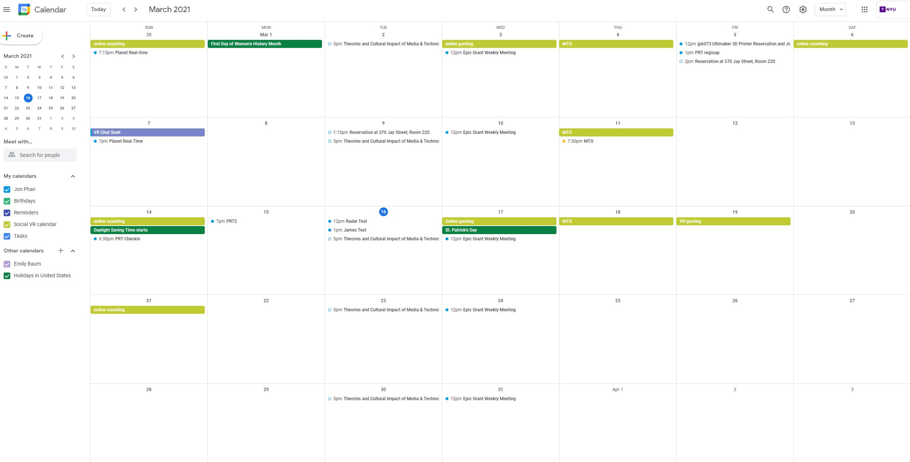

Week 6 Final Project Declaring Week
Martina Menegon
Martina Menegon's art was a really impressive way to use avatars to express identity and self. The pieces that stuck out the most to me were the crazy entanglement of bodies rag dolling on themselves. It was like an internal struggle to within, forever claustrophobically bouncing off each other. She does a good job having a coherent theme where a lot of her pieces involve multiple copies of herself displayed sort of in a disposable way. I think adding the interactivity ability using spaces adds to the works that involved that as well, being able to navigate around and see her clones or faces in different angles enhanced the experience. The way she made a filter to put her face on others was well done but I wonder how it would have looked if she had different expressions in each one. Some of the more technology-based ones weren't too out of the ordinary for me since I've worked with 3D scan data and the UV maps that come out of them, I wonder if the magic is lost for some of us who see things like this every day. The idea of using only yourself to scan poses an interesting challenge, but it does make me wonder to what extent is it based, like if she used a selfie stick or multiple phones on tripods to make it easier, or go in the other direction and make things harder using an old camera and scanning in the photos into software.Social Calendar
 My virtual socializing was about the same as usual, I played card games with my friends, we did try a new webcam system though with something called OBS ninja. I was able to make a server and have everyone else join using a password and link, the quailty and connection speed was super great. My online coaching is falling apart a bit though since I've been so extra busy with my second job and grad school but I'll try to keep on it. Playing games has been a great way to unwind once a week as well, but it's mostly just me and my one buddy using it as an excuse to catch up with eachother. Oh yeah and I've met with the Epic grant team multiple times this week, we do a group thing on Wed and a couple on the weekends. It's pretty crazy how fast Todd can be when it comes to debugging in Unreal Engine.home
while (!deck.isInOrder()) {
print 'Iteration ' + i;
deck.shuffle();
i++;
}
print 'It took ' + i + ' iterations to sort the deck.';